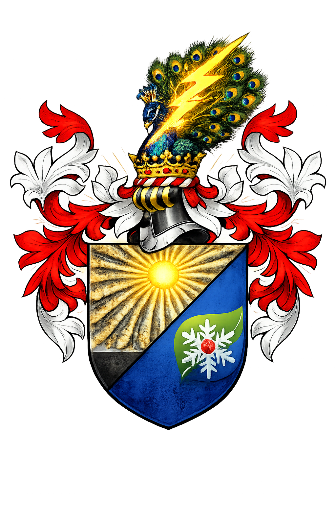

Rooted in Ardahan · Forged Through Generations
Heritage · Honor · Legacy
Ardahan — Trabzon — Anatolia
A legacy born in the rugged mountains of northeastern Anatolia, carried across generations with pride and perseverance.
The Yıldırım family traces its deepest roots to Ardahan, the storied highland province on Turkey's northeastern frontier. Nestled among the peaks of the Caucasus foothills, Ardahan has long been a crossroads of cultures, empires, and resilient communities. It was here, amid vast plateaus and harsh winters, that the Yıldırım name was first spoken — carried by a family known for their fortitude and loyalty to their land.
The family's story is also intertwined with Trabzon, the ancient port city on the Black Sea coast. Trabzon served as a gateway — a place where mountain families met the wider world, where trade routes from Persia, the Caucasus, and the Mediterranean converged. Through Trabzon, the Yıldırımlar connected their highland roots with the broader currents of Anatolian life, commerce, and culture.
The coat of arms tells this story in symbols: the radiant sun represents the enduring light of Ardahan's open skies, the peacock crown speaks to the dignity carried from one generation to the next, and the snowflower on the azure field honors the family's resilience through the legendary winters of the northeast — a people shaped by their land, never broken by it.
The ancestral heartland. Ardahan's high plateaus and fortress ruins echo with the memory of generations past. The family's values — endurance, community, honor — were forged in this unforgiving yet beautiful landscape at the edge of the Caucasus.
The gateway to the world. Trabzon's ancient harbor connected the highland families of the northeast to the trade and culture of the Black Sea and beyond. For the Yıldırımlar, Trabzon was where roots met horizon — a bridge between ancestral soil and new frontiers.
The earliest known Yıldırım forebears settle in the highlands of Ardahan province, establishing a household bound by the values of the northeastern frontier — resilience, hospitality, and unwavering family loyalty.
The family extends its reach to Trabzon, the great Black Sea port. Trade, education, and cultural exchange along the coast open new chapters in the Yıldırım story, while the bond to Ardahan remains unbroken.
The family crest is formalized — the radiant sun of Ardahan's open skies, the peacock crown of ancestral dignity, and the snowflower of northeastern resilience become lasting symbols of Yıldırım identity.
Branches of the family spread across Turkey and beyond, carrying the spirit of Ardahan and the ambition kindled in Trabzon to new lands. Wherever they go, the Yıldırım name commands respect.
Today, the Yıldırım family thrives across the globe — a living testament to the enduring strength of Anatolian kinship, shared memory, and a name carried with pride from the highlands of Ardahan to every corner of the world.
Each member carries the family legacy forward in their own way, united by the bonds that define us.
Moments captured through the years — celebrations, gatherings, and the quiet joys of family life.
Whether you're family, friend, or fellow traveler on the path of heritage — we'd love to hear from you.
The Yıldırım family welcomes correspondence from relatives near and far, researchers exploring shared ancestry, and friends old and new. Whether your roots lead to Ardahan, Trabzon, or beyond — reach out. Every connection strengthens the bonds of our heritage.